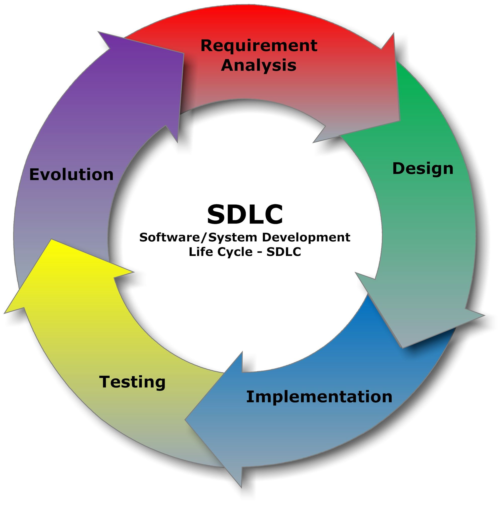

SDLC significa Software Development Life Cycle, que en
español se traduce como ciclo de vida del desarrollo de
software. Es un conjunto organizado de etapas, procesos
y actividades que se utilizan para planificar, diseñar,
desarrollar, probar, implementar y mantener un sistema
de software.
El SDLC permite organizar el trabajo de los equipos de
desarrollo, establecer objetivos, administrar recursos
y controlar los riesgos durante la construcción de un
producto informático.
Desde el punto de vista de la calidad de software, su
finalidad es lograr que el producto cumpla los requisitos
establecidos, funcione correctamente, sea seguro, tenga
un rendimiento adecuado y satisfaga las necesidades
de sus usuarios.
La calidad no depende solamente de las pruebas finales.
Debe considerarse durante todas las etapas del ciclo
de vida para prevenir errores y reducir el costo de
corregirlos.

Las etapas se retroalimentan y pueden repetirse para mejorar el producto.
Objetivos del SDLC
Los principales objetivos del SDLC son:
Comprender las necesidades del cliente y definir
los requisitos del sistema.
Organizar las actividades y los recursos del proyecto.
Establecer procesos de desarrollo claros y controlados.
Detectar y corregir defectos lo antes posible.
Mejorar la seguridad, el rendimiento y la confiabilidad.
Verificar que el software cumpla los requisitos
funcionales y no funcionales.
Facilitar el mantenimiento y las futuras mejoras.
Reducir riesgos, retrabajos y costos asociados a los
errores.
Etapas del SDLC
El SDLC suele dividirse en seis etapas principales.
La cantidad y el orden pueden variar según el modelo
de desarrollo utilizado por la organización.
Planificación y análisis de requisitos
En esta etapa se determinan los objetivos del
proyecto, las necesidades de los usuarios, el
presupuesto, los plazos y los recursos necesarios.
También se documentan los requisitos funcionales
y no funcionales del sistema.
Ejemplos de requisitos funcionales:
Permitir que un usuario inicie sesión.
Registrar una compra.
Generar una factura.
Ejemplos de requisitos no funcionales:
Proteger los datos personales.
Responder a las solicitudes en un tiempo aceptable.
Permitir que la aplicación sea accesible y fácil de usar.
Actividades de calidad:
Revisar que los requisitos sean claros y verificables.
Definir criterios de aceptación.
Identificar riesgos relacionados con la calidad.
Establecer objetivos y métricas de calidad.
Diseño del software
En esta etapa se define cómo se construirá el
sistema. Se diseña su arquitectura, la estructura
de los componentes, las bases de datos, las
interfaces y las comunicaciones entre servicios.
Actividades de calidad:
Revisar la arquitectura del sistema.
Evaluar los riesgos de seguridad.
Comprobar que el diseño responda a los requisitos.
Analizar la mantenibilidad y la escalabilidad.
Planificar las pruebas necesarias.
Desarrollo o codificación
Los programadores escriben el código fuente y
construyen las funcionalidades definidas durante
las etapas anteriores.
Actividades de calidad:
Aplicar estándares de programación.
Realizar revisiones de código.
Utilizar herramientas de análisis estático.
Ejecutar pruebas unitarias.
Controlar las versiones del código.
Las pruebas unitarias verifican componentes
individuales, como una función que calcula el
importe total de una compra.
Pruebas y validación
En esta etapa se evalúa el comportamiento del
software para identificar defectos y comprobar
si cumple los requisitos establecidos.
Entre los principales tipos de pruebas se encuentran:
Pruebas de integración:
verifican la comunicación entre componentes.
Pruebas de sistema:
evalúan el sistema completo.
Pruebas de aceptación:
verifican que el producto satisfaga las
necesidades y criterios de aceptación.
Pruebas de regresión:
comprueban que los cambios no hayan afectado
funcionalidades existentes.
Pruebas de rendimiento:
evalúan tiempos de respuesta y comportamiento
bajo diferentes niveles de carga.
Pruebas de seguridad:
buscan vulnerabilidades y accesos no autorizados.
Pruebas de usabilidad:
evalúan si el sistema es fácil de comprender y utilizar.
Los defectos encontrados se registran, se priorizan,
se corrigen y se vuelven a verificar.
Implementación o despliegue
En esta etapa el software se instala o publica en
el entorno donde será utilizado por los usuarios.
Puede tratarse de un servidor, una plataforma en
la nube o un dispositivo.
Actividades de calidad:
Verificar la configuración del entorno.
Comprobar que la instalación sea correcta.
Validar las conexiones con otros sistemas.
Realizar pruebas de humo después del despliegue.
Controlar posibles errores en producción.
Preparar procedimientos de recuperación ante fallos.
Mantenimiento y mejora continua
Después de la implementación, el software requiere
seguimiento para corregir errores, actualizar
dependencias, mejorar el rendimiento y agregar
nuevas funcionalidades.
Actividades de calidad:
Registrar y analizar incidentes.
Corregir defectos detectados por los usuarios.
Aplicar actualizaciones de seguridad.
Ejecutar pruebas de regresión.
Monitorear el rendimiento y la disponibilidad.
Analizar las causas de los errores recurrentes.
Importancia del SDLC en la calidad de software
Integrar la calidad en el SDLC permite detectar
problemas antes de que lleguen a los usuarios.
Cuanto más tarde se descubre un defecto, mayor puede
ser el costo de corregirlo, especialmente si afecta
a otros componentes o a sistemas ya implementados.
Aseguramiento de la calidad (QA)
El aseguramiento de la calidad, conocido como QA
(Quality Assurance), se centra en los procesos y
prácticas utilizados para prevenir defectos y mejorar
la forma en que se desarrolla el software.
Algunos ejemplos son definir estándares, revisar
procedimientos, establecer políticas de calidad y
mejorar los procesos de desarrollo.
Control de calidad (QC)
El control de calidad, conocido como QC (Quality
Control), se centra en evaluar el producto para
identificar defectos y comprobar que cumpla los
requisitos establecidos.
Por ejemplo, ejecutar pruebas sobre una aplicación
para verificar que los pagos se procesen correctamente.
Métricas de calidad
Las métricas permiten medir y evaluar diferentes
aspectos del proceso y del producto.
Cantidad de defectos:
número de errores encontrados durante un período.
Cobertura de pruebas:
proporción del código o de los requisitos cubiertos
por las pruebas, según la métrica utilizada.
Tasa de aprobación:
proporción de pruebas ejecutadas que finalizaron
correctamente.
Tiempo de resolución:
tiempo necesario para corregir un defecto.
Disponibilidad:
proporción del tiempo durante el cual el sistema
está operativo.
Ninguna métrica por sí sola garantiza la calidad.
Los resultados deben interpretarse según el contexto,
los riesgos y los objetivos del proyecto.
Ejemplo práctico del SDLC
Imaginemos que una empresa necesita desarrollar una
tienda en línea para vender productos.
Planificación:
se define que los usuarios deben poder registrarse,
consultar productos y realizar compras.
Diseño:
se diseña la base de datos, el catálogo y el proceso
de pago seguro.
Desarrollo:
se programa el registro, el carrito de compras y
la integración con el proveedor de pagos.
Pruebas:
se verifica que el importe sea correcto, que no se
generen cobros duplicados y que los datos estén
protegidos.
Implementación:
se publica la aplicación y se comprueba que las
funcionalidades principales operen correctamente.
Mantenimiento:
se corrigen errores, se actualizan componentes y
se vuelven a probar las funcionalidades afectadas.
Este ejemplo demuestra que la calidad no depende
únicamente de la etapa de pruebas. Un requisito mal
definido, un diseño inseguro o un error de programación
pueden afectar al producto final.
Diferencia entre SDLC y STLC
El SDLC organiza la creación y evolución del producto; el STLC
estructura las actividades que permiten comprobar su calidad.
Ambos ciclos se coordinan y se solapan durante el proyecto.
En pantallas pequeñas, desliza la tabla horizontalmente para comparar las columnas.
SDLC y STLC: dos ciclos relacionados con objetivos distintos
Aspecto
SDLC · Desarrollo
STLC · Pruebas
Propósito
Construir, entregar y mantener un producto de software que responda a las necesidades del usuario.
Planificar y realizar pruebas para evaluar el producto y aportar evidencia sobre su calidad.
Alcance
El producto y el proceso completo: desde la definición de necesidades hasta su mantenimiento.
Las actividades de prueba aplicadas a requisitos, componentes, integraciones y al sistema completo.
Etapas habituales
Requisitos, diseño, desarrollo, pruebas, despliegue y mantenimiento.
Análisis, planificación, diseño de pruebas, preparación, ejecución y cierre.
Participantes
Equipo multidisciplinario: producto, análisis, desarrollo, pruebas y operaciones.
Testers y QA, en colaboración con desarrollo, producto y otros especialistas.
Resultados
Software funcional, documentación, versiones y mejoras del producto.
Casos y evidencias de prueba, defectos registrados e informes de resultados.
Relación temporal
Avanza durante la vida del producto y puede organizarse de forma secuencial o iterativa.
Comienza desde el análisis de requisitos y continúa junto al desarrollo, incluso después de cada cambio.
En síntesis: el STLC no es una etapa aislada al
final del SDLC; sus actividades acompañan el desarrollo para
detectar problemas cuanto antes.
Modelos de desarrollo de software
El SDLC puede organizarse mediante diferentes modelos.
La elección depende de las características del proyecto,
los riesgos, los requisitos y la forma de trabajo del equipo.
Modelo en cascada
Organiza el desarrollo en etapas secuenciales. Cada
etapa suele completarse antes de avanzar a la siguiente.
Puede resultar útil cuando los requisitos son estables
y están bien definidos.
Modelo iterativo e incremental
El producto se desarrolla mediante ciclos sucesivos.
Cada iteración permite revisar resultados, recibir
comentarios y mejorar el sistema.
Metodologías ágiles
Promueven entregas frecuentes, colaboración con el
cliente, adaptación a los cambios y retroalimentación
continua. Scrum y Kanban son enfoques comunes para
organizar el trabajo de los equipos.
DevOps y CI/CD
DevOps fomenta la colaboración entre desarrollo y
operaciones. Las prácticas de integración continua
y entrega o despliegue continuo permiten automatizar
compilaciones, verificaciones y liberaciones.
Estos enfoques no eliminan la necesidad de controlar
la calidad. Por el contrario, pueden incorporar
verificaciones automáticas durante todo el proceso.
Glosario de conceptos importantes
Términos frecuentes para comprender el desarrollo de software
y las actividades que ayudan a construir y verificar su calidad.
Ciclos de vidaSDLC
Ciclo de vida del desarrollo de software. Organiza el trabajo desde la definición de necesidades hasta el despliegue y mantenimiento del producto.
Ciclos de vidaSTLC
Ciclo de vida de las pruebas de software. Ordena actividades como analizar requisitos, diseñar y ejecutar pruebas, y comunicar sus resultados.
CalidadQA
Aseguramiento de la calidad (Quality Assurance): prácticas centradas en mejorar el proceso y prevenir defectos antes de que lleguen al producto.
CalidadQC
Control de calidad (Quality Control): actividades que evalúan el producto, por ejemplo, mediante pruebas, para identificar defectos y verificar requisitos.
PruebasTesting
Proceso de evaluar un componente o sistema y analizar sus resultados para comprobar comportamientos y detectar fallos. Las pruebas aportan información sobre la calidad, pero no demuestran que no existan defectos.
PruebasDefecto o bug
Problema en el software que puede hacer que el sistema produzca un resultado incorrecto o se comporte de manera distinta a la esperada.
PruebasCaso de prueba
Especificación de condiciones, datos de entrada, pasos y resultados esperados que permite verificar un comportamiento concreto.
PruebasPrueba de regresión
Prueba que se repite después de un cambio para comprobar que las funciones existentes siguen comportándose correctamente.
RequisitosCriterio de aceptación
Condición verificable que una funcionalidad debe cumplir para que el equipo y las partes interesadas la consideren aceptada.
PruebasCobertura de pruebas
Medida de los requisitos, escenarios o elementos del código que han sido comprobados, según el criterio de cobertura utilizado. Una cobertura alta no garantiza por sí sola que las pruebas sean suficientes.
PruebasPrueba de humo
Comprobación inicial y breve que confirma que las funciones esenciales están operativas después de una compilación o un despliegue.
PruebasPrueba de integración
Prueba que comprueba la interacción y el intercambio de datos entre dos o más componentes o servicios conectados.
AutomatizaciónAutomatización de pruebas
Uso de herramientas y scripts para ejecutar comprobaciones de forma repetible y comparar los resultados con los esperados.
Conclusión
El SDLC es fundamental para desarrollar software
organizado, confiable y mantenible. Su importancia
en la calidad consiste en incorporar actividades
preventivas y de evaluación desde la definición de
los requisitos hasta el mantenimiento del sistema.
Aplicar buenas prácticas de calidad en cada etapa
ayuda a reducir defectos, controlar riesgos, mejorar
la experiencia de los usuarios y aumentar la
confiabilidad del producto.
En conclusión, la calidad de software no se obtiene
únicamente mediante pruebas al finalizar el desarrollo:
se construye a lo largo de todo el ciclo de vida.